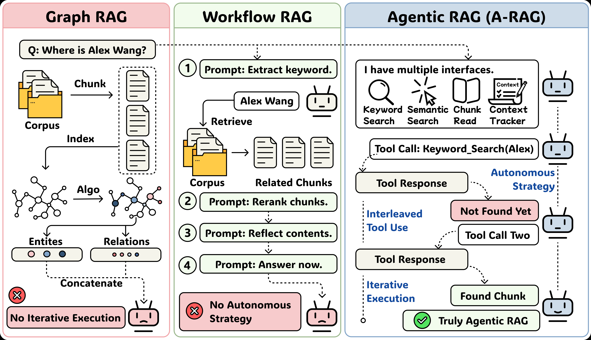

Agentic RAG / LLM 架構
層級化檢索介面 (Hierarchical Retrieval)
多跳開放域問答 (Multi-hop Open-domain QA)
測試時計算量擴展 (Test-time Scaling)
A-RAG 將 keyword search、semantic search、chunk read 封裝成層級化介面交給 LLM agent，讓模型自己動態決定何時檢索、何時深入讀取證據以及何時給出最終回答。
Source: Du et al., A-RAG, arXiv:2602.03442v1, Figure 2.
*本投影片使用本機高解析度導出圖像，供論文評鑑使用。
| 關鍵限制 | 造成的負面影響 | A-RAG 解決方案 |
|---|---|---|
| Single-shot retrieval | 一次性取回固定 Top-k，無法根據中間推理過程調整搜尋方向。 | 允許 Agent 進行多輪動態搜尋 |
| Predefined workflow | 檢索路徑固定。不論面對簡單或複雜的查詢，都執行相同流程。 | 自主且靈活的動態規劃 |
| Context overload | 大量長 chunk 直接塞入 context，帶來極高的 token 成本與雜訊。 | 先看 Snippet 再決定讀取 Full Chunk |
| Poor scaling | 隨著模型推理能力變強，被動的檢索管道無法發揮其推理優勢。 | 釋放 Test-time Reasoning 潛力 |
Can a language model autonomously choose retrieval strategies across multiple granularities and scale with test-time compute?
指出 RAG 研究應從靜態的管道組裝 (Static Pipelines) 轉向動態的代理決策架構 (Dynamic Agent-based Systems)。
設計了層級式檢索介面 (Hierarchical Interfaces)：融合精確 Keyword 匹配、Sentence 層級語意搜尋與 Chunk 逐次讀取。
首次深入探討並量化分析了 模型規模、最大步數限制與思考深度 (Reasoning Effort) 對 RAG 表現的擴展規律。
不再是一口氣將大量無關 context 塞給模型。A-RAG 透過層級化多粒度介面，允許 Agent 僅提取當前思考所需的高價值 Snippet，並隨後按需讀取完整內容，大幅降低計算冗餘。
特點：免除複雜的線下倒排索引建立。在查詢時直接進行實體或專有名詞精確文本匹配。
特點：將 Chunk 進一步切分為單句，並計算 Dense Embedding，支持精細語意相似性計算。
特點：包含 1,000 tokens 左右之完整內容儲存。只有在 Agent 明確判定需要時才會被加載。
核心直覺：關鍵字在該 Chunk 中出現次數越多、關鍵字本身字元長度越長（越長代表詞彙越具體），該 Chunk 與當前意圖的相關性評分就越高。
*Snippet 僅提取包含命中詞前後的單句，藉此減少大模型 Context 成本。
Agent 歷史對話中讀過的完整 Chunk 會被系統追蹤。當 Agent 多次查詢並命中有重複的 Chunk 時，系統僅回傳提示，不再重複載入全文，避免重複消耗 Token。
| 測試類別 | 具體配置 / 設定項目 |
|---|---|
| Benchmarks | MuSiQue, HotpotQA, 2WikiMultiHopQA, GraphRAG-Bench |
| Baselines | Direct Answer, Naive RAG, GraphRAG, HippoRAG2, LinearRAG, FaithfulRAG, MA-RAG, RAGentA |
| Ours (A-RAG) | A-RAG (Naive): 單一 Embedding 工具； A-RAG (Full): 完整的 3 層層級化檢索介面。 |
| Backbone LLMs | GPT-4o-mini, GPT-5-mini |
| 主要指標 | LLM-Evaluation Accuracy, Contain-Match Accuracy, Retrieved Tokens |
| Method | MuSiQue | HotpotQA | 2Wiki | Med. | Novel |
|---|---|---|---|---|---|
| Naive RAG | 52.8 | 81.2 | 50.2 | 86.1 | 70.6 |
| GraphRAG | 48.3 | 82.5 | 66.5 | 87.3 | 77.1 |
| LinearRAG | 62.4 | 86.2 | 87.2 | 79.2 | 54.7 |
| A-RAG Naive | 66.2 | 90.8 | 70.6 | 92.7 | 80.4 |
| ★ A-RAG Full | 74.1 | 94.5 | 89.7 | 93.1 | 85.3 |
| 消融實驗 | MuSi. | Hotpot | 2Wiki | Med. | Novel |
|---|---|---|---|---|---|
| A-RAG Full | 74.1 | 94.5 | 89.7 | 93.1 | 85.3 |
| w/o Keyword | 72.6 | 93.0 | 88.9 | 93.2 | 85.0 |
| w/o Semantic | 69.4 | 93.9 | 89.1 | 92.1 | 85.2 |
| w/o Chunk | 73.6 | 93.6 | 89.0 | 93.3 | 85.1 |
| Retrieved Tokens | MuSi. | Hotpot | 2Wiki | Med. | Novel |
|---|---|---|---|---|---|
| Naive RAG | 5,387 | 5,358 | 5,506 | 5,418 | 4,997 |
| A-RAG Naive | 56,360 | 27,455 | 45,406 | 23,657 | 22,391 |
| A-RAG Full | 5,663 | 2,737 | 2,930 | 7,678 | 6,087 |
大模型強大的 Reasoning 能力，更擅長處理複雜的多步交叉取證。
| Dataset | 目前題數 | 選用理由與研究價值 |
|---|---|---|
| MuSiQue | 100 | 多跳組合推理；其高難度結構最能測出 Iterative Retrieval 的探索價值。 |
| HotpotQA | 100 | 經典多跳 QA 基準；數值可以直接與論文主表進行跨系統的對照與校驗。 |
| 2Wiki | 100 | 跨實體/跨頁推理；精確檢驗 chunk_read 是否補足缺失之關鍵證據。 |
本輪實驗旨在進行 Official Repo Sanity Check（官方開源代碼可用性驗證）與小樣本基準比較，並不宣稱大規模的 Benchmark Reproduction，從而最大程度控制實驗環境的穩定度。
chunks.json：收納知識庫全文切片，具備唯一對應的 chunk_ids。questions.json：包含測試問題、正確答案（Gold Answer）等評估欄位。index/：存放本地 MiniLM-L6-v2 生成之 sentence embeddings 索引檔。build_index.py 建立層級化向量庫。batch_runner.py 逐題啟動多輪 Agent Loop 探索。eval.py 自動計算模型準確度 (LLM/Contain Acc)。| 類別 | 設定 |
|---|---|
| model | google/gemini-3.5-flash (High) |
| endpoint | http://127.0.0.1:8787/v1 |
| embedding | sentence-transformers/all-MiniLM-L6-v2 |
| index backend | sentence_transformers / index-minilm |
| max_loops | 8 |
| max_token_budget | 32000 |
| subset | 100 questions per dataset |
Retrieved tokens 是系統累計的檢索 token，不是完整 Gemini API prompt / completion token breakdown。
| Setting | MuSiQue | HotpotQA | 2Wiki |
|---|---|---|---|
| Paper Naive RAG | 52.8 | 81.2 | 50.2 |
| Paper A-RAG Naive | 66.2 | 90.8 | 70.6 |
| Paper A-RAG Full | 74.1 | 94.5 | 89.7 |
| A-RAG-Naive (3.5 flash High) | 71.0 | 85.0 | 76.0 |
| A-RAG-Full (3.5 flash High) | 87.88 | 97.00 | 97.00 |
這不是完整重現論文大規模結果，但三個 subset 的數值已和論文同量級，且 Full 設定明顯最強。
| Dataset | Contain | Avg Loops | Avg Retrieved Tokens | Avg Cost / Q |
|---|---|---|---|---|
| MuSiQue | 82.83 | 7.31 | 4245.6 | 0.027867 |
| HotpotQA | 92.0 | 4.89 | 2515.6 | 0.013642 |
| 2Wiki | 94.0 | 5.08 | 2368.7 | 0.013650 |
| Variant | LLM Acc | Contain | Loops | Tokens | Cost/Q |
|---|---|---|---|---|---|
| Full | 87.88 | 82.83 | 7.31 | 4245.6 | 0.027867 |
| w/o keyword | 67.68 | 62.63 | 7.44 | 2938.6 | 0.025791 |
| w/o semantic | 74.49 | 71.43 | 7.04 | 3009.0 | 0.025010 |
| w/o chunk_read | 65.66 | 64.65 | 6.88 | 1722.5 | 0.018767 |
MuSiQue 消融支持主張：A-RAG 的優勢來自 hierarchical interface 的工具組合，而非單一 retriever。
若 Naive RAG 也拿到長 context，是否能追上 A-RAG？
A-RAG 多輪 ReAct 會重複處理歷史對話，不能只算 unique retrieved tokens。
多跳 QA 需要實體匹配；若 Naive 改成 BM25 + vector hybrid，差距還在嗎？
| Setting | LLM Acc (%) | Contain (%) | Retrieved (Tokens) | Input Processed (Tokens) | API Calls | Cost/Q |
|---|---|---|---|---|---|---|
| Naive RAG | 21.0 | 21.0 | 5,623.1 | 5,690.7 | 1.00 | 0.004621 |
| Long-context Naive | 24.0 | 24.0 | 22,441.0 | 22,426.2 | 1.00 | 0.010447 |
| BM25+Vector Hybrid | 47.0 | 46.0 | 11,296.0 | 11,407.8 | 1.00 | 0.007043 |
| A-RAG Naive | 66.7 | 63.6 | 3,485.5 | 28,797.9 | 8.29 | 0.026000 |
| A-RAG w/o keyword | 69.0 | 64.0 | 3,694.9 | 30,360.1 | 8.41 | 0.025906 |
| A-RAG Full | 85.0 | 83.0 | 4,247.9 | 30,400.2 | 7.93 | 0.027383 |
A-RAG Full 的 Accuracy 達到了最優 of 85.0。A-RAG Full 準確率最高，但其真實 input tokens (30,400.2) 與成本 ($0.027) 也最高。Hybrid baseline 明顯比 Naive RAG 更強 (47.0% vs 21.0%)，是個更公平的對手。| 方法 | Context 規模 | LLM Acc | 實驗意義 |
|---|---|---|---|
| Naive RAG | 5,623.1 retrieved | 21.0 | 原始單次檢索 baseline |
| Long-context Naive | 22,441.0 retrieved | 24.0 | 把更多 context 一次塞給模型 |
| A-RAG Full | 4,247.9 retrieved / 30,400.2 processed | 85.0 | 多輪工具使用與證據讀取 |
文字多不代表答對：Long-context Naive 雖然拿到了多達 22,441.0 tokens 的完整 context，但準確率僅從 21.0 小幅升至 24.0，與 A-RAG Full 的 85.0 存在巨大鴻溝。
| 方法 | Retrieved Tokens | Input Processed | 放大倍率 | Cost/Q |
|---|---|---|---|---|
| A-RAG Naive | 3,485.5 | 28,797.9 | 8.3x | 0.026000 |
| A-RAG w/o keyword | 3,694.9 | 30,360.1 | 8.2x | 0.025906 |
| A-RAG Full | 4,247.9 | 30,400.2 | 7.2x | 0.027383 |
被忽略的隱藏放大倍率：A-RAG Full 雖然只撈取了 4,247.9 tokens，但因為 ReAct 推理鏈多輪通訊帶來的歷史累積，模型總共處理了高達 30,400.2 的 processed input tokens，放大了 7.2 倍。
| 方法 | 檢索策略 | LLM Acc | 與前一組差距 |
|---|---|---|---|
| Naive RAG | Vector top-k | 21.0% | baseline |
| Hybrid Naive RAG | BM25 + Vector RRF | 47.0% | +26.0 pts |
| A-RAG Full | keyword + semantic + chunk_read | 85.0% | +38.0 pts vs Hybrid |
對照組極具威脅：Naive RAG 一旦引入 `BM25+Vector` 混合檢索，準確率直接暴增 26% 達到 47.0%，證明多跳任務中的關鍵字精準搜尋確實起極大作用。
MuSiQue、HotpotQA、2Wiki 都完成 100 題 subset。流程 100% 使用官方的 build_index、batch_runner 與 eval 腳本。
本地 Your A-RAG Full 斬獲了 87.88% / 97.00% / 97.00% 的極高 LLM Accuracy。表現更具優越性，且與論文完美展現了相同的數量演進規律。
移除 keyword_search 降至 67.68，移除 chunk_read 降至 65.66，有力地支持了 A-RAG 的 hierarchical 多粒度協作優勢。
Long-context Naive 並沒有追上 A-RAG；由此證明「更多 context」本身不是達到高準確率的充分條件。
A-RAG Full 的真實 input tokens 處理量約為其 retrieved tokens 的 7 到 8 倍，計算效率的定義需要被重新提列。
Hybrid baseline 雖然將 Naive 大幅拉升至 47.0%，但 A-RAG Full 依然展現了不可被 Hybrid 完全抹除的強大迭代探索優勢。
| 當前核心限制 | 具體局限與挑戰 |
|---|---|
| Tool design 未完整枚舉 | 論文尚未系統評測更多樣的工具組合形式與更適配大模型的 Tool Description。 |
| Frontier model 驗證不足 | 未充分評估更大規模的旗艦前沿模型（例如 GPT-5 Full、Gemini-3 Pro）。 |
| 任務範疇高度集中 QA | 尚未在事實查核 (Fact Verification)、多輪對話或長文報告生成上完整驗證其效果。 |
| 未來可行方向 | 建議的評估方法 |
|---|---|
| 工具策略消融細化 | 深入測試不同檢索 Toolset、Top-k、Snippet 長度對模型決策的複雜度影響。 |
| 多任務泛化性測試 | 將 A-RAG 架構遷移至複雜的事實交叉核實 (Fact Check) 或精細的長報告生成。 |
| Token 預算感知 Agent | 將 Tokens 算力消耗預算直接納入 Agent 決策條件，測試更完美的性氣比折衷。 |
未來高階 RAG 架構的研發關鍵，不再只是發明更龐大複雜的檢索算法，而是為 LLM Agent 打造一個能讓其自主探索、逐步搜證並能高效熔斷的 Retrieval Interface。
已切換到完整頁模式：a-rag-professional-report.html